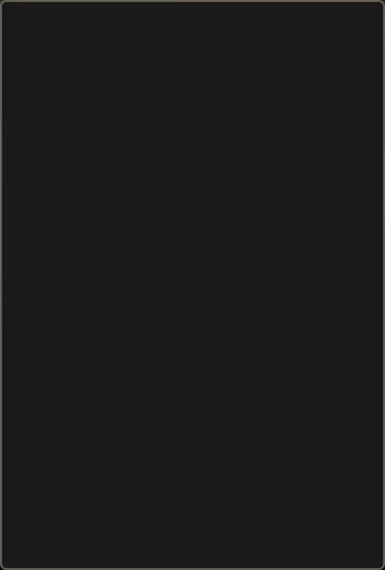
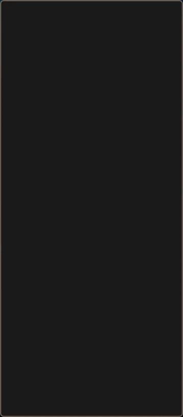

Neovim News #11 - The Christmas Issue
The real 0.5 was the friends we made along the way
The long-awaited release of Neovim v0.5.0 finally happened on July 2, 2021. It took longer than everybody had hoped for, but it was worth the wait: With over 4000 commits, it is so big that it broke some of the release tooling. So these notes will not be able to touch on each of the many changes that were made over the course of development and only focus on the most user-visible improvements, of which the biggest are 1. Lua as a first-class scripting and configuration language, 2. Language server protocol (LSP), 3. Treesitter (early access).
Lua everywhere!
Neovim 0.5 went far in making Lua a first-class scripting language for Neovim, both for plugin development and for user configuration.
As a reminder, Lua is a small scripting language designed for embedding and is often used in, e.g., game development. Furthermore, there is a just-in-time compiler (LuaJIT, which Neovim is built with on platforms where it is available) that can provide impressive performance on relevant tasks. In essence, Lua was chosen over other languages because it is 1. tiny -- perfect for embedding (as opposed to a remote plugin host), 2. fast -- LuaJIT can be orders of magnitude faster than Vimscript (and non-JITed Lua), 3. simple -- small but expressive syntax (Lua 5.1) made for scripting, with Neovim itself providing a "standard library" by exposing internal functions via an API.
For more details on this choice, see Justin M Keyes' presentation at Vim Conf 2019 and TJ DeVries' presentation at Vimconf.live.
Let's look at what this means for plugin authors and users.
Lua plugins
Neovim exposes its API natively to Lua via, e.g., vim.api.nvim_open_win(). It also provides methods for accessing vimscript (ex) commands and variables via, e.g., vim.cmd("echo 'foo'") and vim.g.syntax_on, respectively. This allows writing plugins with the same capabilities as those written in Vimscript while exploiting the performance of Lua(JIT) at core programming language tasks like loops. It is also possible to make use of Lua's own luarocks plugin ecosystem.
Correspondingly, over the course of the 0.5 development cycle, there has been an explosion in the number of Lua plugins, ranging from rewrites of popular Vimscript plugins to completely new ones that would not have been possible in Vimscript -- often from contributors who were completely new to (neo)vim plugin development and were averse to learning Vimscript for that task. As a positive side effect of the long development cycle, many of these are already fully-featured and stable at the time of the 0.5 release!
Here is a small and non-representative list of Lua plugins:
- Plenary -- A library of useful utilities for developing Neovim plugins (some of which will later be integrated into core).
- Packer -- A package manager with support for plugin dependencies, lazy-loading, and installing luarocks.
- Telescope -- A highly extendable fuzzy finder over lists.
- Gitsigns -- A plugin for showing and interacting with changes on files in a git repository (asynchronously).
- Nvim-compe -- An auto completion framework for various sources, including Neovim's builtin LSP client.
- Nvim-dap -- A debug adapter protocol implementation for step-through debugging of your code.
- Colorizer -- A high-performance color highlighter for Neovim without any external dependencies.
- Formatter -- A plugin for asynchronously executing external formatting tools on the current buffer or range.
- Hop.nvim - An EasyMotion-like movement plugin that does not need to mess with your buffer.
- Neogit - A Magit-like Git interface.
A much more comprehensive list of Neovim plugins can be found at the user-contributed Awesome Neovim collection.
Not all of these plugins are actually written in Lua: there are many other languages (some of which are typed) that compile to Lua, e.g., - Fennel(Lisp) via Aniseed or Fennel-nvim, - Teal, - Amulet ML, - MoonScript via nvim-moonmaker, - Vim9script (as a proof of concept).
Lua config
It is also possible to write user configuration in Lua: If there is an init.lua, it is read instead of init.vim (these cannot coexist, and having both in your config directory will give an error), and .lua files in runtime directories (plugin/, colorscheme/, after/ etc.) are sourced in addition to (after) Vimscript files. Note that this is entirely optional and not needed to enjoy the new functions introduced in Neovim 0.5; furthermore, not every Vimscript configuration option has a fully native Lua equivalent yet. Extending the native API to cover these as well is part of the goal for Neovim 0.6.
For a comprehensive and up-to-date guide on using Lua for Neovim scripting and configuration, see Getting started using Lua in Neovim. A good model for a Lua configuration using init.lua is Defaults.nvim.
Language Server Protocol (LSP)
The Language Server Protocol (LSP) is an open, JSON-RPC-based protocol for communication between code editors and language servers, which provide programming language-specific features such as
- completion,
- hover/tooltips,
- go to definition,
- show/go to references,
- show method signatures,
- rename,
- code actions (automatic formatting, organize imports, ...),
and more.
The idea is to separate these features into an editor-independent but language-specific server and a language-independent but editor-specific client, which communicate via the Language Server Protocol over RPC. (It should be pointed out that not every server implements every feature, and the quality of the responses can vary wildly. The "reference implementation" in VS Code also often adds non-standard features that are not covered by the LSP itself.)
Neovim 0.5 provides an LSP client written (mostly) in Lua that provides a highly configurable and extensible way of accessing these features. It does not aim at competing with more feature-rich and "out-of-the-box" plugins like CoC.nvim but is meant to be tailored to your preferences (while still being useable with reasonable defaults). For an overview, see TJ DeVries' Vimconf.live presentation and his shorter video.
For many language servers, Nvim-lspconfig already provides the necessary configuration to set everything up easily. Alternatively, some languages also have specific LSP plugins that provide a more integrated setup, e.g., for Java and Scala.
To learn more about LSP and how to use it in Neovim, visit Nvim-lspconfig (including its Wiki) and read :h lsp.
Expect more work on LSP during the 0.5.x development cycle to provide improved configuration options and better coverage of the latest LSP specification (version 3.16 at the point of writing), including semantic highlighting.
Tree-sitter
Neovim 0.5 adds experimental support for tree-sitter, a library that parses a piece of code into a syntax tree in an incremental and error-resilient way; this means that reparsing that code after an edit is very fast, and parsing error due to, e.g., typos remain localized and do not break parsing further down. This tree can then be efficiently queried to obtain syntax information about the code. This allows for improved and/or faster
- syntax highlighting,
- code navigation,
- refactoring,
- text objects and motions,
- searching and replacing,
and more. Tree-sitter also makes it easy to highlight parts of a file differently if they contain code in a different language. To learn more about tree-sitter, watch Tree-sitter - A new parsing system for programming tools - Max Brunsfield.
The goal is to replace the current vim regular expression-based syntax with tree-sitter, not only for better and faster syntax highlighting but also for new and improved ways of structured text editing. However, tree-sitter support in 0.5 should still be considered as "early access": It works well enough to test out and see what is possible, but it should not be relied on for productive use due to a number of serious bugs and performance regressions that need to be addressed before tree-sitter in Neovim can be declared stable. Note also that enabling tree-sitter based highlighting for a language currently disables the internal regex-based syntax engine completely for this file type, which may break other features that rely on it. Fixing these issues and improving the API will be a major focus of the development cycle leading up to the 0.6 release.
Also, Neovim itself only provides a (Lua) API for generating and querying the syntax tree using the bundled tree-sitter library; see :h treesitter. User-facing features like the ones mentioned above are implemented in plugins like
- Nvim-treesitter -- Highlighting, folds, incremental selection.
- Playground -- Utility functions to easily show the parsed tree and run queries against it.
- Nvim-treesitter-textobjects -- Better text objects for vim-style motions and operators.
- Nvim-refactor -- Highlight definitions, navigation, smart rename.
- Architext -- structural text editing (i.e., syntax-aware search and replace).
More information on using these features can be found in the Nvim-treesitter README or by watching Thomas Vigouroux's Vimconf.live presentation.
What's the difference between LSP and tree-sitter?
This is a common question, especially since LSP as of version 3.16 provides "semantic highlighting". In short, tree-sitter operates on a single file, parsing the file into a syntax tree which is used to support the variety of enhanced code navigation and manipulation functions. On the other hand, language servers operate across multiple files and project libraries, using various different, server-dependent, methods for parsing each file's syntax tree. (Of course, tree-sitter is one possible choice for this purpose, and is in fact used by, e.g., bash-language-server and wasm-language-server.)
In particular, this means that language servers can use semantic information from a different file to annotate the tree for the current file: For example, a variable declared as const in one file can be highlighted in red if it is used in a different file -- something that tree-sitter cannot do since it only has access to the latter file when highlighting.
For more details, watch TJ DeVries' presentation on this topic.
Other changes
Of course, these were not the only major changes in 0.5. Here is a short summary of representative new features.
Decorations
There is an improved decoration provider API that allows setting and interacting with extmarks (invisible anchored text markers that move when surrounding text is edited), virtual text (text overlays that can now be drawn at any position on screen), and highlights (which is heavily leveraged by nvim-treesitter).
The following notification mockups taken from a Discourse post by @sunjon show what can be achieved with this API in combination with LuaJIT:
 
Floats
The API for floating windows now includes a "z-index" (allowing for control over how floating windows stack) and support for borders.
Highlight on yank
Neovim now has a built-in function to briefly highlight the yanked region (similarly to https://github.com/machakann/vim-highlightedyank), configurable from Lua. To use it, you can add the following to your init.vim:
au TextYankPost * lua vim.highlight.on_yank {higroup="IncSearch", timeout=150, on_visual=true}
See :h vim.highlight.on_yank() for more configuration options.
Vim patches
Of the over 4000 commits in this release, about 1000 were patches and runtime updates ported from Vim -- nearly all of them by or with the help of the amazing @janlazo. In particular, the runtime files (syntax files, documentation, etc.) are fully synced with Vim up to May 2021, with many later changes already included as well.
Community
In keeping with the motto of this newsletter, one of the most noticeable positive changes was the growth of the community and of new ways of interacting with it.
Discourse
Previously, support requests and discussions were spread across Reddit, Gitter, and GitHub Discussions and were either ephemeral or hard to search for. We have now consolidated around a new Neovim Discourse, which is a free and open source forum platform with mailing list and RSS features, in addition to a nice web interface. The Neovim Discourse is an official core project and moderated by core team members.
Matrix
The official chatroom for Neovim is on Gitter. After the acquisition of Gitter by Matrix (a federated chat protocol), this room can now also be accessed from Matrix; it is also bridged to the IRC network Libera.chat. Due to the increasing number of users, there are now additional, more specific rooms for development of and around neovim, GUIs, and off-topic chat.
(The links above are to the rooms accessed through Element, a web-based Matrix client; you can also access it through any of the many other Matrix clients.)
Vimconf.live
Due to the global COVID-19 pandemic, VimConf 2020 unfortunately had to be canceled. In its place, a virtual Vimconf.live conference was held, with 16 speakers and over 1000 registered participants from 12 countries. If you have missed it, you can watch the lectures on the Youtube playlist.
Twitch
Another effect of the pandemic was the rise of interest in the live streaming of open source development on Twitch. Many of the speakers at Vimconf.live are active streamers; in particularly, TJ DeVries regularly streams his work on Neovim as "open open source", and the release of Neovim 0.5 was streamed live on his channel.
Neovim development
The number of people active in Neovim development also grew. Between 0.4.4 and 0.5.0, there were 301 unique commit authors, compared to 112 between 0.3.8 and 0.4.4 (a comparable time frame).
Sponsorship
You can now sponsor Neovim via Github Sponsors or OpenCollective. (BountySource began introducing worrying changes to their Terms of Service agreement and is therefore no longer recommended.)
What's next?
As already mentioned, further improvements to the headlight features introduced in 0.5 will happen over the 0.5.x release cycle:
- Lua API -- Support for more native Lua objects (autocommands, mappings, commands).
- LSP -- Improved configuration API, full 3.16 compliance (including semantic highlighting).
Making tree-sitter a stable and faster replacement for syntax highlighting (and beyond) is the major goal for the 0.6.0 release. This includes fundamental work on the decorations API to allow for things like in-line folding or inserting virtual lines and columns ("anti-conceal").
Beyond that, notable goals are better file change detection as well as further decoupling the TUI (terminal UI) from the Neovim core with the goal of allowing remote TUI instances.
Finally, we are aiming for more regular and frequent releases (at least for patch versions), which will hopefully remove the need for a "neovim 0.6 when?" meme for a change.
Thanks
A big thank you to everyone involved in the project that helped make Neovim 0.5 a reality -- be they contributors, sponsors, bug-reporters, or supporters. In lieu of full credits, here are some of the people you can thank for the features listed in this letter:
- @tjdevries, @h-michael, @norcalli, and @mjlbach for the LSP client;
- @vigoux, @bfredl, @theHamsta and the nvim-treesitter team for the tree-sitter integration;
- @janlazo for the tireless (and often thankless) work of porting patches and runtime updates from vim;
- and last but not least @bfredl for the decorations API, floating windows, a variety of similar feats of C-code wizardry, and for taking
:smileseriously.
Finally, thank you to @justinmk and @brammool for your foundational work and your vision -- the *vim community is stronger together!